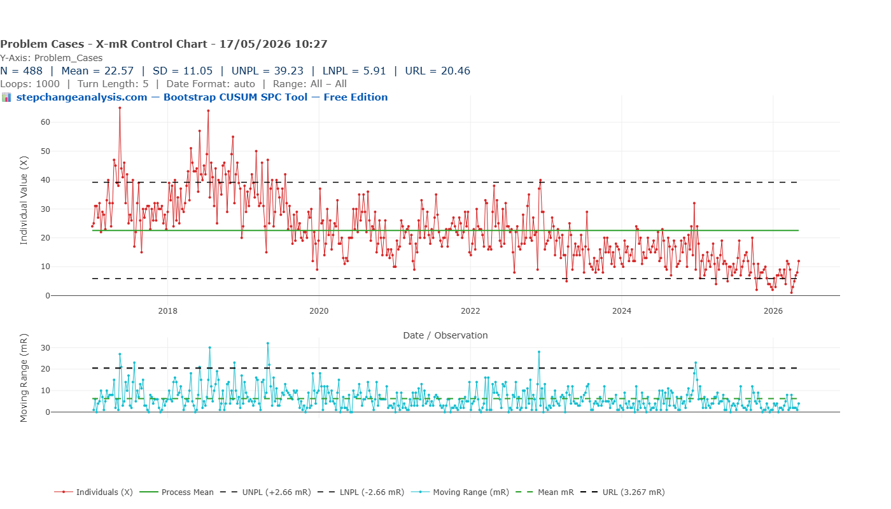
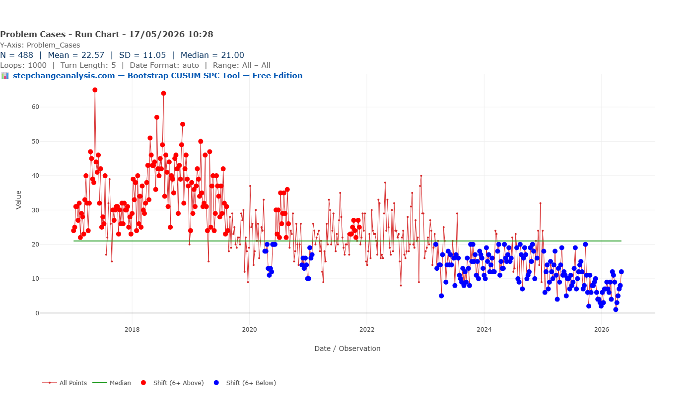
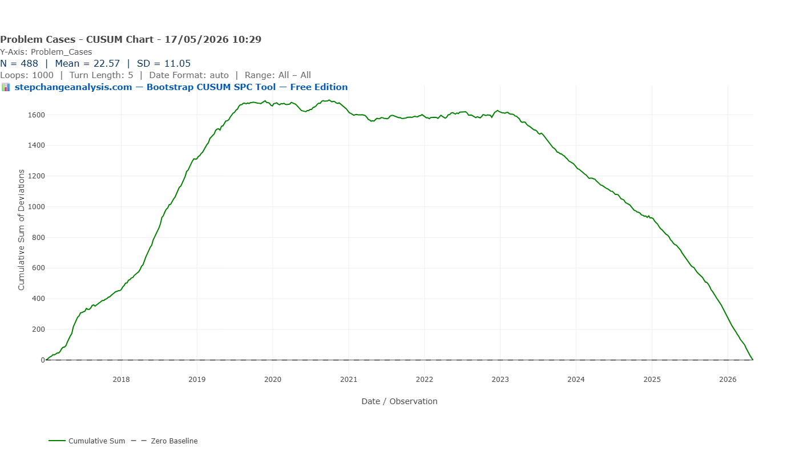
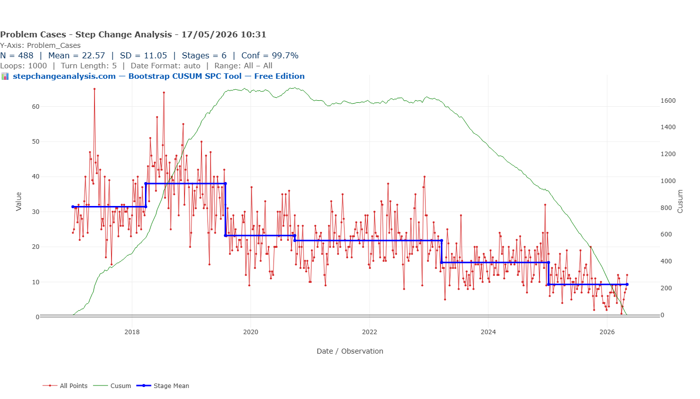

Same Data, Three Charts, Three Very Different Stories
A practical guide for clinical pharmacists, medicines safety officers, and quality improvement leads who need to present defensible evidence of change to boards, regulators, and commissioners.
☰ Table of Contents — click to expand or collapse
- Introduction: the chart is not neutral
- The dataset
- Chart 1: The X-mR Shewhart Control Chart
- Chart 2: The Run Chart
- Chart 3: Bootstrap CUSUM Step-Change Analysis
- How to read the green CUSUM line
- Why Bootstrap — why not classical CUSUM?
- Choosing your confidence level
- The three-chart comparison
- When each chart is the right choice
- Retrospective vs Prospective Use — Two Different but Equally Powerful Applications
- A note on Bootstrap convergence — verifying your results
- A note on information governance
- Summary
- References
Introduction: the chart is not neutral
When a medicines safety team presents data to a clinical governance board, the choice of chart is rarely treated as a significant decision. You have the data. You plot it. You present it.
But the chart you choose is not a neutral vessel for your data. It is an analytical lens — and different lenses reveal different things. More troublingly, some lenses actively conceal things that are genuinely present in the data.
This article presents three charts of exactly the same dataset: 488 weekly observations of support cases submitted by clinicians using a high-risk medicines clinical decision support system, running from 2016 to 2026. The mean is 22.57. The standard deviation is 11.05. The data is real and has been anonymised.
Each chart is legitimate. Each is widely used in healthcare quality improvement. Each tells a different story. Only one tells the whole truth.
The dataset
Over the nine and a half years covered by this dataset, a high-risk medicines clinical decision support system was progressively rolled out, refined, and adopted across a clinical user base. Support cases — queries submitted by clinicians asking how to use the system — were logged weekly throughout this period.
The weekly case count started high — around 40 to 42 per week — and through successive system improvements, training initiatives, and deepening user proficiency, descended to approximately 6 per week by 2026. That is an 85% reduction over eight years, achieved not in a single step but through eleven distinct, sequential improvements, each embedding before the next was introduced.
This is exactly the kind of story a quality improvement programme should be able to tell its board. The question is: which chart tells it?
Chart 1: The X-mR Shewhart Control Chart

The X-mR (Individuals and Moving Range) chart is the most commonly used SPC chart in NHS quality improvement. It calculates a process mean (green line, at 22.57), adds upper and lower natural process limits at plus and minus 2.66 times the mean moving range (UNPL 39.23, LNPL 5.91), and flags individual points that breach those limits as potential signals of special cause variation.
Applied to this dataset, the X-mR chart tells the following story: the process has been broadly stable across nine and a half years, with a flat mean of 22.57. There are a number of points breaching the upper control limit in 2017 and 2018 — these would be flagged for investigation. The lower control limit of 5.91 is never breached significantly until very recently.
The implicit governance message is: this is a stable process with some concerning elevated periods in its recent history.
This conclusion is not just incomplete. It is actively misleading.
The flat mean of 22.57 is an average of data that began at 42 and ended at 6. It is a number that accurately describes neither the start of the series nor the end — it is the arithmetic mean of a journey, reported as if it were a destination. The high points in 2017–2018 that the chart flags as “signals” were in fact the beginning of the improvement story, not evidence of deterioration. And the most important feature of the dataset — a sustained, systematic, eight-year programme of measurable improvement — is completely invisible.
Why does this happen?
The X-mR chart calculates its control limits from the mean moving range — the average week-to-week variation across the entire series. When a dataset contains genuine, sustained step-changes over time, this calculation absorbs the between-stage variation into the within-stage noise estimate, producing limits that are too wide to detect the steps. The chart is designed for a stable process and interprets everything through that assumption — even when the process is demonstrably not stable.
Additionally, the standard deviation of 11.05 is 49% of the mean of 22.57. This immediately signals substantial non-normality: the data is right-skewed, with most weekly values below the mean and occasional high values pulling the average upward. The control limits, derived from normal-distribution mathematics, are therefore placed in the wrong position — further reducing the chart’s sensitivity to genuine change.
Chart 2: The Run Chart

The run chart is simpler than the Shewhart chart and, in one important respect, more honest with this dataset. It plots each observation against the overall median (21.00) and uses run rules — specifically, runs of six or more consecutive points above or below the median — to flag potential shifts.
On this dataset, the run chart identifies two broad zones. The red dots — points in a run of six or more above the median — dominate the period from 2017 to approximately 2020. The blue dots — runs of six or more below the median — begin appearing around 2019–2020 and become almost universal from 2023 onwards.
The run chart is correctly detecting that something real happened. A quality manager looking at this chart would rightly conclude that the process has shifted downward at some point — probably around 2019 or 2020. This is more than the X-mR chart managed. But it is still a profoundly incomplete picture.
What the run chart cannot tell you
- That there were not one but eleven distinct stages of improvement
- That the first step-change occurred in 2017, not 2019–2020
- That each step had a specific magnitude — from 42 to 35, from 35 to 24, and so on down to 6
- That each change point can be dated within a confidence window
- That the overall reduction was 85% from start to finish
- That the confidence level on any of these findings is 90%
The run chart draws one flat median line through a process that visited eleven different levels. It is the equivalent of describing a staircase as a slope — directionally correct, but losing all the structure that makes it useful for governance, evaluation, or funding decisions.
Chart 3: Bootstrap CUSUM Step-Change Analysis

The Bootstrap CUSUM step-change analysis of the same dataset produces something categorically different from the previous two charts.
Eleven distinct stages are identified at 90% confidence. The blue step-mean line descends in a clear staircase: approximately 30 at the opening of the series, rising briefly to around 42 in early 2017, then stepping down — 35, 24, 22, 22, 17, 15, 11, 10, and finally approximately 6 by 2026. Each step is accompanied by a dashed confidence box, showing the window within which that step-change is estimated to have occurred.
The green CUSUM line tells the story of accumulated evidence: it rises as the metric ran above its eventual long-run level in the early years, peaks around 2019–2020, then descends continuously as sustained improvement compounds. By 2026 it approaches zero — the signature of a process that has been running below its historical average long enough that the accumulated evidence of improvement is overwhelming.
A governance report based on this analysis can state:
“Bootstrap CUSUM step-change analysis of 488 weekly observations identifies eleven distinct stages of improvement at 90% confidence. Weekly clinical decision support queries have reduced from a stage mean of approximately 42 in early 2017 to approximately 6 in 2026 — an 85% reduction. Each change point is dated within a confidence interval of four to eight weeks, consistent with the implementation timelines of successive pathway interventions.”
That statement can go into a board paper. It can withstand scrutiny from a clinical governance committee or a CQC inspector. It supports a funding continuation decision. It quantifies the return on a quality improvement programme investment.
How to read the green CUSUM line
Before going further, it is worth pausing to explain what the green CUSUM line actually is and what it tells you — because it is the most important element of the chart, and the most commonly misread.
📊 How the CUSUM line is calculated and what it means
The CUSUM (Cumulative Sum) line is built by taking each observation, subtracting the overall mean of the entire series, and adding that deviation to a running total. The result is a line that tells you, at any point in time, whether the data has been running consistently above or below its long-run average.
- Rising slope — data is running above the overall mean. In this dataset: weekly case counts are higher than the long-run average.
- Falling slope — data is running below the overall mean. Case counts are lower — improvement is accumulating.
- Flat — data is hovering around the overall mean. No net drift in either direction.
- A peak or turning point — the most important feature. This is the moment the process changed direction — where it switched from running above average to below, or vice versa. The Bootstrap algorithm tests whether that turning point is statistically significant or genuine, or could have occurred by chance.
- Steepness — how far above or below the mean the data is running. A steep slope means the data is strongly and consistently above or below average. A gentle slope means the deviation is small or inconsistent.
The blue stage mean lines are the Bootstrap algorithm’s verdict on where genuine structural changes occurred and with what confidence. The green line is the raw evidence. The blue lines are the statistical interpretation of it. Change the confidence level and the blue lines move — but the green line never changes, because it is derived entirely from the data.
With that in mind, look again at the Bootstrap CUSUM chart above. The green line rises from 2017 to around 2019–2020 — telling you that during that period, weekly case counts were consistently running above the overall series mean. It then turns and falls continuously to 2026 — telling you that from that turning point onwards, case counts have been consistently below the overall mean. The turning point is precisely the moment the improvement programme began to structurally outweigh the earlier elevated period. The Bootstrap algorithm’s job is to test whether each inflexion in that line represents a statistically significant structural change or is simply noise.
Why Bootstrap — why not classical CUSUM?
The CUSUM chart has been used in industrial quality control since E.S. Page developed it at Cambridge in 1954. Its logic — accumulating evidence of drift rather than evaluating individual observations in isolation — makes it fundamentally better suited than Shewhart charts to detecting sustained shifts.
But classical CUSUM still relies on distributional assumptions when setting its decision threshold. For non-normal data, those assumptions are as problematic as the ones underlying the Shewhart limits.
Bootstrap CUSUM solves this by deriving the decision threshold directly from the data itself. The actual dataset is randomly reordered one thousand times. For each reordering, the CUSUM statistic is calculated. A random reordering destroys any genuine temporal structure, so this generates an empirical picture of what the CUSUM looks like when there is definitively no change present — using your data’s actual distributional characteristics, not a theoretical normal distribution it doesn’t follow.
The decision threshold is then set at the chosen confidence level from this empirical distribution. The confidence level is calculated directly from your actual data by resampling it 1,000 times (or whatever level you choose), rather than looked up from a statistical formula or textbook table that assumes your data follows a normal distribution. It is earned from the data, not assumed from theory.
Choosing your confidence level
One of the most practically useful features of Bootstrap CUSUM step-change analysis is that the confidence level is not fixed — it is a choice the analyst makes explicitly, based on the purpose of the analysis and the audience receiving it.
Here is what happens when the same 488-observation dataset is analysed at three different confidence levels:

| Confidence level | Stages detected | Interpretation |
|---|---|---|
| 90% | 11 stages | Every change the data plausibly supports, including smaller steps |
| 95% | 10 stages | One marginal change point drops out; remaining steps are more certain |
| 99.7% | 6 stages | Only the largest, most unambiguous structural shifts remain |
The tool’s Statistical Evidence Table makes this concrete with real numbers. At 95% confidence, the ten stages are:
| Stage | From | To | Mean | SD | Conf % | Change % |
|---|---|---|---|---|---|---|
| 1 | 02/01/2017 | 19/06/2017 | 34.88 | 11.05 | Baseline | Baseline |
| 2 | 19/06/2017 | 26/03/2018 | 29.59 | 11.05 | 96.8% | −15.2% |
| 3 | 26/03/2018 | 10/12/2018 | 41.84 | 11.05 | 96.0% | +41.4% |
| 4 | 10/12/2018 | 29/07/2019 | 33.85 | 11.05 | 96.0% | −19.1% |
| 5 | 29/07/2019 | 28/09/2020 | 23.23 | 11.05 | 100.0% | −31.4% |
| 6 | 28/09/2020 | 19/04/2021 | 18.17 | 11.05 | 95.4% | −21.8% |
| 7 | 19/04/2021 | 20/03/2023 | 22.82 | 11.05 | 95.4% | +25.6% |
| 8 | 20/03/2023 | 06/01/2025 | 15.54 | 11.05 | 100.0% | −31.9% |
| 9 | 06/01/2025 | 29/09/2025 | 11.46 | 11.05 | 99.3% | −26.3% |
| 10 | 29/09/2025 | 04/05/2026 | 6.75 | 11.05 | 99.3% | −41.1% |
At 99.7% confidence, only the six largest structural shifts survive:
| Stage | From | To | Mean | SD | Conf % | Change % |
|---|---|---|---|---|---|---|
| 1 | 02/01/2017 | 29/07/2019 | 34.91 | 11.05 | Baseline | Baseline |
| 2 | 29/07/2019 | 28/09/2020 | 23.23 | 11.05 | 100.0% | −33.5% |
| 3 | 28/09/2020 | 20/03/2023 | 21.81 | 11.05 | 100.0% | −6.1% |
| 4 | 20/03/2023 | 06/01/2025 | 15.54 | 11.05 | 100.0% | −28.7% |
| 5 | 06/01/2025 | 29/09/2025 | 11.46 | 11.05 | 99.7% | −26.3% |
| 6 | 29/09/2025 | 04/05/2026 | 6.75 | 11.05 | 99.7% | −41.1% |
Notice that Stages 2, 3, and 4 at 99.7% confidence are each detected at 100% confidence — meaning that across all 1,000 bootstrap resamples, not a single one failed to detect these changes. This is as definitive as statistical evidence can be.
Also worth noting: the 95% table reveals a genuine upward step in Stage 3 (March–December 2018, mean 41.84, +41.4%). This is not noise — it is a real, statistically confirmed temporary worsening before the sustained improvement resumed. Stage 3 was subsequently identified as a period of elevated log-on and printing support queries coinciding with reduced nursing and pharmacy staffing levels during the July summer holiday period, when the clinical users most familiar with the system were on leave and knowledge transfer to cover staff was limited. Improvement resumed as staffing normalised.
In Deming/Shewhart terminology, Stage 3 represents a special cause — an assignable, external event temporarily disrupting an otherwise improving process. The Bootstrap CUSUM correctly distinguished it from common cause variation, flagging it as a discrete stage rather than absorbing it into background noise. Identifying and explaining such episodes is only possible when each stage is individually dated and quantified. A standard control chart would have absorbed this into background variation and it would never have been investigated.
The staircase descends at all three levels. The 85% overall reduction holds regardless of which confidence level is chosen. What changes is the granularity — how many of the individual steps are considered sufficiently well-evidenced to report.
This has direct practical implications for governance reporting. A board paper going to a conservative clinical governance committee, or a submission to CQC, might use 95% or 99.7% — fewer steps, but each one defensible at a very high level of certainty. An internal improvement team evaluating programme performance in detail might use 90%, capturing every statistically detectable step to understand which interventions moved the needle.
Critically, the core finding is robust across all three confidence levels. The direction of change, the approximate magnitude of the overall reduction, and the timing of the major structural shifts are consistent whether you choose 90%, 95%, or 99.7%. This robustness — the fact that the story does not change depending on the threshold — is itself a form of evidence.
For a sceptical reviewer or governance committee, this is a powerful argument: “We tested the analysis at three different confidence levels. The number of steps detected varies, but the fundamental finding — a sustained, multi-stage reduction of approximately 85% over eight years — is present at every level of stringency we applied. And at every level, the confidence is earned from the data itself, not assumed from a statistical formula.”
No classical SPC method offers this kind of explicit, transparent confidence calibration. The three-sigma rule used in Shewhart charts is fixed by convention, not chosen by the analyst based on the governance context. Bootstrap CUSUM puts that choice where it belongs: with the person responsible for the analysis and accountable for its conclusions.
The three-chart comparison
| Run Chart | X-mR Shewhart | Bootstrap CUSUM | |
|---|---|---|---|
| Detects that something changed | Yes — broadly | No | Yes — precisely |
| Identifies how many changes | No | No | Yes — 11 stages |
| Dates each change point | No | No | Yes — with confidence interval |
| Quantifies each change | No | No | Yes — stage means, conf % & change % |
| Provides a confidence level | No | No | Yes — from your own data, not statistical theory |
| Handles non-normal data reliably | Partially | No | Yes — distribution-free |
| Defensible under governance challenge | Partially | Unlikely | Yes |
| Suitable for board papers and CQC | Limited | Limited | Yes |
When each chart is the right choice
Use the Run Chart when:
- You need a simple, accessible chart that any clinical staff member can interpret
- You are doing initial exploratory analysis to check whether anything has changed
- You are working with very small datasets where formal threshold methods are unreliable
Use the X-mR Shewhart chart when:
- You are monitoring a process in real time and need staff to respond to signals at the point of care
- Your data is approximately normally distributed
- You need a chart that flags individual anomalous observations for immediate investigation
Use Bootstrap CUSUM step-change analysis when:
- You are evaluating historical data to determine whether and when a sustained change occurred
- Your data is non-normally distributed — counts, rates, costs, rare events, or any series where SD exceeds roughly 40% of the mean
- You need a statistically defensible confidence level for governance, regulatory, or commissioning purposes
- You want to identify multiple change points and date each one
- You are making a retrospective case for the impact of a quality improvement programme
Retrospective vs Prospective Use — Two Different but Equally Powerful Applications
The case study in this article is retrospective — we are looking back at nine and a half years of data and asking: did the process change, when, and by how much? The Bootstrap CUSUM answers all three questions with precision.
In our dataset, the step-change boundaries correspond to periods of known system development activity — successive product upgrades and server migrations implemented over the nine-year period. The Bootstrap CUSUM correctly identified that genuine structural changes occurred and dated each one — providing the starting point for any retrospective investigation.
For the January 2025 stage boundary specifically, the cause is known: the support team introduced a new case category (‘Problems at Customer Site’) which reclassified a proportion of existing cases out of the main count. This is a textbook special cause in Deming/Shewhart terms — a recording change rather than a genuine process improvement — and should be interpreted accordingly. Crucially, the Bootstrap CUSUM detected it. A standard control chart would not have.
The prospective use case: where Bootstrap CUSUM is most powerful
When used prospectively — monitoring for the effect of a planned intervention — the attribution problem disappears entirely.
The workflow is straightforward. You implement a change: a new clinical protocol, a prescribing policy, a system upgrade, a training programme. You continue logging your weekly or monthly data as normal. You run the Bootstrap CUSUM analysis periodically. When the analysis detects a new stage, you have statistical confirmation, dated to within weeks, that your intervention has produced a genuine structural change in the process.
You know what you did. You know when you did it. The Bootstrap CUSUM tells you whether it worked, with what confidence, and from what date the new level was established.
This is precisely the evidence that clinical governance committees, commissioners, and CQC inspectors are asking for: not a run chart showing a vague downward trend, but a dated, confidence-bounded, quantified stage change that coincides with your intervention and can be defended under challenge.
A note on Bootstrap convergence — verifying your results
Because the Bootstrap CUSUM derives its confidence thresholds by resampling the data randomly, there is a small degree of run-to-run variability when the number of iterations is low. At 1,000 loops, marginal change points — those sitting close to the confidence threshold — may appear in some runs and not others. This is not a flaw in the method. It is a property of any resampling procedure and can be managed straightforwardly: increase the number of bootstrap iterations until the result stabilises.
In our dataset at 99.7% confidence:
- At 1,000 loops: 5 or 6 stages detected (marginal variability at the boundary)
- At 5,000 loops: 5 stages consistently
- At 10,000 loops: 5 stages consistently
The consistency of results at 5,000 and 10,000 iterations confirms convergence. For any formal governance submission, board paper, or publication, 10,000 bootstrap iterations is recommended to ensure results are fully converged and reproducible.
A note on information governance
Uploading patient-adjacent data to cloud-based analytical platforms requires formal DPIA assessment and Information Governance approval in NHS settings — a process that can take months. Browser-native tools, where the analysis runs entirely within the local browser and no data is transmitted to any external server, eliminate this barrier entirely. The CSV file never leaves the analyst’s machine. There is no upload, no cloud storage, no third-party data processing — removing the IG approval requirement and making it straightforward to deploy even on air-gapped NHS machines.
Try it on your own data
If you have a CSV file of time-series medicines data — weekly or monthly incident counts, prescribing volumes, error rates, cost figures — you can generate all three charts in this article, plus a one-click PDF formatted for board or governance submission, directly in your browser.
No installation. No login. No data leaving your computer.
Summary
Three charts. Same data. Radically different conclusions.
The run chart detects a broad shift — useful, but unable to say when, how many steps, or with what confidence. The X-mR Shewhart chart misses the systematic improvement entirely, reporting a flat mean and flagging early high points as the main story. The Bootstrap CUSUM step-change analysis reveals eleven stages of progressive improvement, an 85% reduction over eight years, with each step dated and bounded at 90% confidence.
The difference is not in the data. It is in the method. And for medicines safety teams preparing governance reports, funding cases, or regulatory submissions, the method you choose determines the story your data is allowed to tell.
In this dataset, the full story is one of the most compelling a quality improvement programme could present: a sustained, multi-intervention, eight-year programme that reduced weekly clinical decision support queries by 85% through eleven measurable, dateable steps — demonstrating that the system embedded, users became proficient, and the support burden reduced in ways that are statistically defensible and chronologically precise.
That story was always in the data. It just needed the right chart to show it.
The dataset used in this article is real, anonymised support case data from a high-risk medicines clinical decision support system collected over nine and a half years. No patient-identifiable data was used. The analysis was performed using a browser-native SPC tool; no data was transmitted to any external server at any point.
References
Page, E.S. (1954). Continuous inspection schemes. Biometrika, 41(1–2), 100–115.
Hinkley, D.V. (1971). Inference about the change-point from cumulative sum tests. Biometrika, 58(3), 509–523.
Efron, B. & Tibshirani, R.J. (1993). An Introduction to the Bootstrap. Chapman & Hall.
Taylor, W.A. (2000). Change-point analysis: a powerful new tool for detecting changes. Taylor Enterprises.
Mohammed, M.A., Worthington, P. & Woodall, W.H. (2008). Plotting basic control charts: tutorial notes for healthcare practitioners. Quality and Safety in Health Care, 17(2), 137–145.
Perla, R.J., Provost, L.P. & Murray, S.K. (2011). The run chart: a simple analytical tool for learning from variation in healthcare processes. BMJ Quality & Safety, 20(1), 46–51.
The Chart That Changes How You See 77 Years of UK Economic History
The same three-chart comparison applied to UK GDP data — and why Bootstrap CUSUM finds an 8-stage structural deceleration that conventional analysis completely misses.
Read the article →